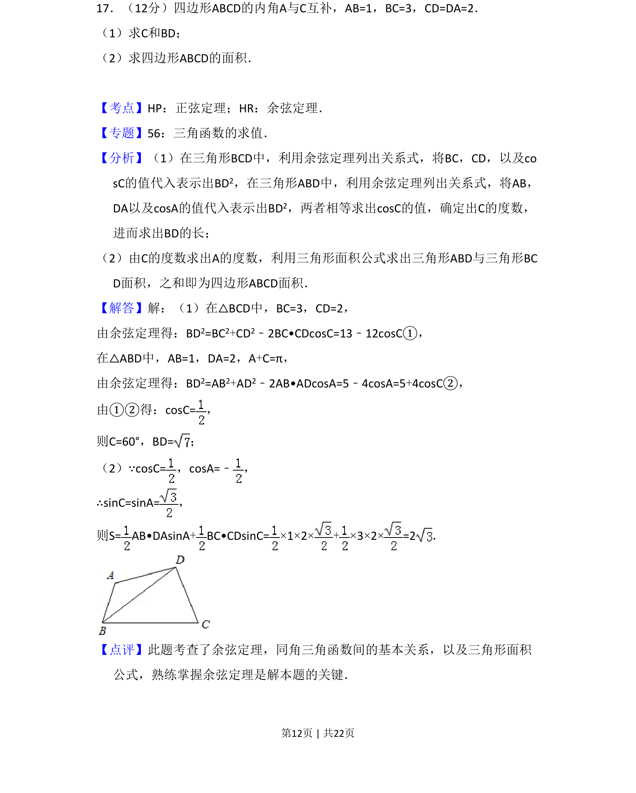
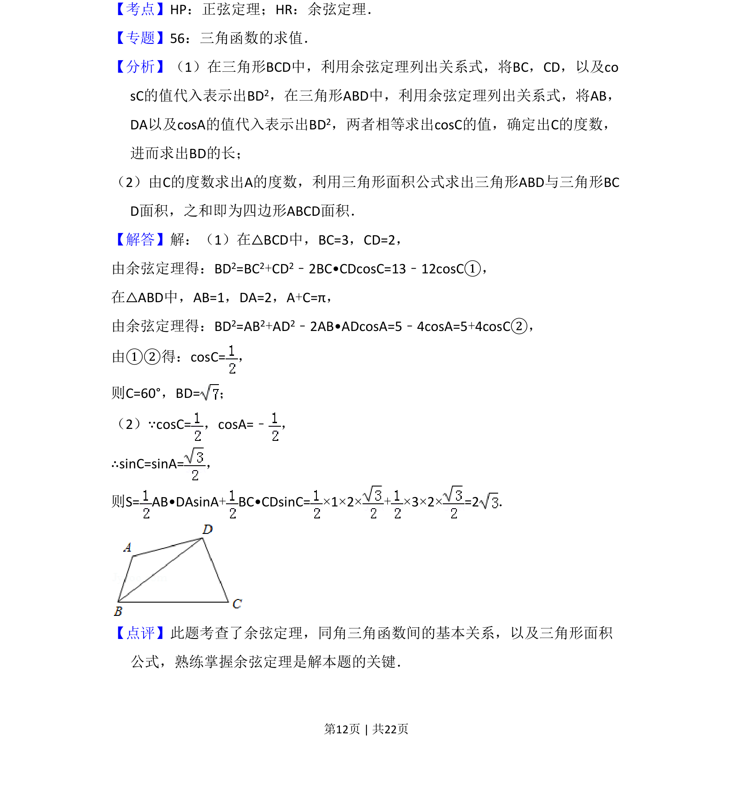

2014-文-17
考点：余弦定理 正弦定理 三角形面积 互补角关系
题面

摘要
利用余弦定理和互补角关系求四边形边长及角度，再计算面积。
关联考点
答案与解析


📄 原 PDF 第 12 页：
素材/真题/吉林/2008-2024·（吉林）数学高考真题/2014年高考数学试卷（文）（新课标Ⅱ）（解析卷）.pdf
题干文本
17．（12分）四边形ABCD的内角A与C互补，AB=1，BC=3，CD=DA=2． （1）求C和BD； （2）求四边形ABCD的面积．
解析文本
【考点】HP：正弦定理；HR：余弦定理．菁优网版权所有 【专题】56：三角函数的求值． 【分析】（1）在三角形BCD中，利用余弦定理列出关系式，将BC，CD，以及co sC的值代入表示出BD2，在三角形ABD中，利用余弦定理列出关系式，将AB， DA以及cosA的值代入表示出BD2，两者相等求出cosC的值，确定出C的度数， 进而求出BD的长； （2）由C的度数求出A的度数，利用三角形面积公式求出三角形ABD与三角形BC D面积，之和即为四边形ABCD面积． 【解答】解：（1）在△BCD中，BC=3，CD=2， 由余弦定理得：BD2=BC2+CD2﹣2BC•CDcosC=13﹣12cosC①， 在△ABD中，AB=1，DA=2，A+C=π， 由余弦定理得：BD2=AB2+AD2﹣2AB•ADcosA=5﹣4cosA=5+4cosC②， 由①②得：cosC=， 则C=60°，BD=； （2）∵cosC=，cosA=﹣ ， ∴sinC=sinA=， 则S= AB•DAsinA+BC•CDsinC=×1×2×+×3×2×=2． 【点评】此题考查了余弦定理，同角三角函数间的基本关系，以及三角形面积 公式，熟练掌握余弦定理是解本题的关键．